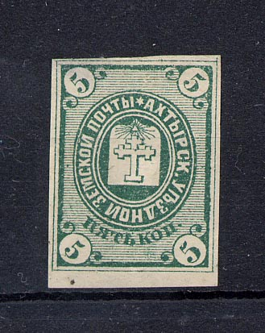
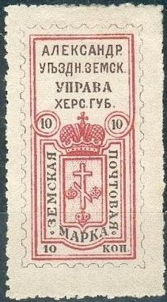
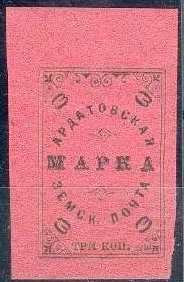
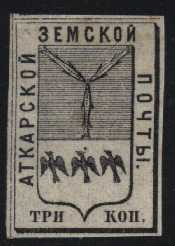
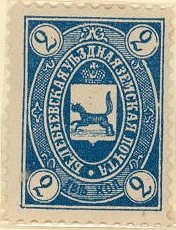

Return To Catalogue - Zemstvos Overview - Russia
Note: on my website many of the
pictures can not be seen! They are of course present in the
catalogue;
contact me if you want to purchase it.
5 k green 5 k blue

(Forgeries of this rare stamp)
In 1867 two stamps (1 k black and 2 k black) were issued, the1 k is extremeley rare (only 3 stamps known) and the 2 k is very rare. In 1875 the stamps stopped being used.
Circular design
(Reduced sizes)

(1874 issues)
10 k blue (1869) 10 k blue (1870) (10) k black on brown (1874) 10 k blue (1874)
Forgeries: I know that the 10 k blue 1874 stamp has been forged by a forger from Hialeah Florida; large numbers (even blocks) of these forgeries are offered on Ebay. General remarks about these forgeries: the forger has probably used a computer scanner and printer, the details are mostly lost in most of his forgeries, the paper is modern and the size does in general not correspond to genuine stamps.


(Reduced size)
10 k blue 10 k green (rare) 10 k orange on lilac, value in blue
The 10 k orange on lilac eixsts in 2 types, the first one with
rounded corners and the second one with square corners, the
second type exists without the value inscription.

10 k black and green 10 k black and blue 10 k black and red 10 k black and brown
Alexandria stopped issuing stamps in 1906.
Circle (several types)
5 k blue (5 types, 1875-1881) 5 k red (2 types, 1875-1880)
5 k brown, blue, orange and silver (1883) 5 k green (1886) 5 k brown (1896) 5 k red (2 types, 1886-1896)
What are these? Postal stationery?:
Mystery items of Ananiev. The left hand side item is listed in
'Les Timbres de Russe' of J.B.Moens.
These appear to be District Town council seals. Probably not for postage but maybe to signify ‘official’ correspondence? (Information obtained thanks to Robert Scott).
(Reduced sizes)
'3 k' or '5 k' in the corners, text in white colour, imperforate 3 k blue (1878) 5 k red (1878) '3' or '5' in the corners, imperforated
3 k blue (2 types, 1880) 5 k red (1880) With border ornaments

5 k blue (1883) Smaller type, perforated

3 k green (1884) 3 k blue (1895) 5 k red (1884) 5 k brown (1895)
Several types exist of these stamps (for example, a dot behind 'TPH' in the 3 k values). The 3 k stamps can be found in different shades of green.
Larger type, perforated

3 k green (1902) 3 k blue (1914) 5 k red (1902)




3 k black on red (2 types) 3 k black on green (2 types) 3 k black on yellow (3 types) 3 k black on blue 3 k black on grey (2 types)
'5 k' in the corners
3 k red (extremely rare) 5 k red (2 types, different text, 1874 and 1876) '5' in the corners, imperforated


5 k red (1880, many types) 5 k lilac
Forgery:
This forgery is described in
http://ufdc.ufl.edu/UF00020235/00035/15j. Note the weird '3'
(cyrillic 'Z'). In genuine stamps, the center of the 'cross'
should be on the right of an imaginary line connected the upper
and lower stars. In the forgery, the center is situated to the
left. These forgeries exist in tete-beche.

5 k lilac (1890) 5 k green (1902) 5 k orange (1908)
Image reproduced with permission from: http://www.sandafayre.com
Not sure if this one is genuine....
black (rare, 2 types; size and design slightly different)



(Shield not pointed, reduced size)
2 k black 3 k black (2 types, pointed shield and not-pointed shield)

I've been told that this is a forgery.
(Variety with dot behind 'KOP', reduced size)
3 k red and blue (white value at the bottom) 3 k red and blue (blue value at the bottom)
The stamp with the white value at the bottom exists with a stop behind 'KOP'.
3 k black and blue
1 k brown 3 k green
4 k black (imperforated, 1876) 4 k blue and red (perforated, 1880)

Old 19th century forgery of the 4 k black (it has no dot after
the text on the right hand side).
2 k red
Wulf in an ellipse (1893 onwards)

(Reduced size)
1 k red and blue (1904, perforated or imperforated) 2 k blue (perforated 1893) 2 k red (1900, perforated or imperforated, 2 sizes exist) 2 k blue and red (1904, perforated or imperforated) 2 k brown and blue (1908, imperforated or perforated) 2 k brown and red (1905, imperforated or perforated)
Wulf in a circle (1893 onwards)
(Reduced size)
5 k blue and orange (1895, perforated or imperforated, 2 sizes exist) 5 k blue and red (1905, perforated or imperforated, 2 sizes exist) 5 k green and blue (1908, imperforated or perforated)
Imperforate stamps of the 'wulf' design were not given to the public, but sold to stamp dealers and collectors.
10 k black, green and blue (1870) 10 k green, blue and black (1882)

{kind=link}
{kind=link}